Descripción del Programa Educativo
Les damos la más cordial bienvenida al sitio web del Programa Educativo de Ingeniería en Tecnologías de la Información e Innovación Digital (ITIID) de la Universidad Politécnica de Tlaxcala (UPTx), un espacio diseñado para acercarte a una comunidad académica comprometida con la formación de profesionistas capaces de liderar la transformación digital de las organizaciones y contribuir al desarrollo tecnológico de México. Nuestro programa inició actividades el 1 de septiembre de 2010, como resultado de un estudio de viabilidad que identificó la creciente demanda de especialistas en Tecnologías de la Información por parte de los sectores industrial, empresarial, gubernamental y de servicios de Tlaxcala y de la región centro del país. Desde entonces, hemos mantenido una evolución permanente sustentada en el Análisis de la Situación del Trabajo, metodología que permite identificar las competencias profesionales requeridas por el mercado laboral y mantener una oferta educativa pertinente, actualizada y alineada con las tendencias tecnológicas globales.
Bienvenido a la Universidad Politécnica de Tlaxcala. Bienvenido a la Ingeniería en Tecnologías de la Información e Innovación Digital. Aquí comienza tu futuro, donde la tecnología inspira, la innovación transforma y el talento construye el mañana.
Misión PE TIID
Formar profesionistas integrales en Tecnologías de la Información e Innovación Digital, mediante un modelo educativo de excelencia basado en competencias, la investigación aplicada, la innovación tecnológica y la vinculación con los sectores social y productivo, en un entorno inclusivo, equitativo e intercultural, para desarrollar soluciones digitales que contribuyan al bienestar social, la transformación tecnológica y el desarrollo sustentable de su entorno.
Vigente a partir de julio 2026
Visión PE TIID 2035
Ser un Programa Educativo reconocido nacional e internacionalmente por la excelencia académica, la pertinencia de su formación profesional, la innovación tecnológica y social, y su compromiso con la inclusión, la equidad de género y la interculturalidad, formando líderes capaces de impulsar la transformación digital y el desarrollo sustentable de la sociedad.
Vigente a partir de julio 2026
Área de Influencia
Instituciones de Educación Superior con carreras en TI y afines en la región.
Mapas Curriculares
Plan de estudios vigente y trayectorias de especialización
Organigrama del Programa Educativo
Conoce la organización académica que da vida al programa, desde la dirección hasta los laboratorios especializados.
Organigrama General
Estructura vigente 2026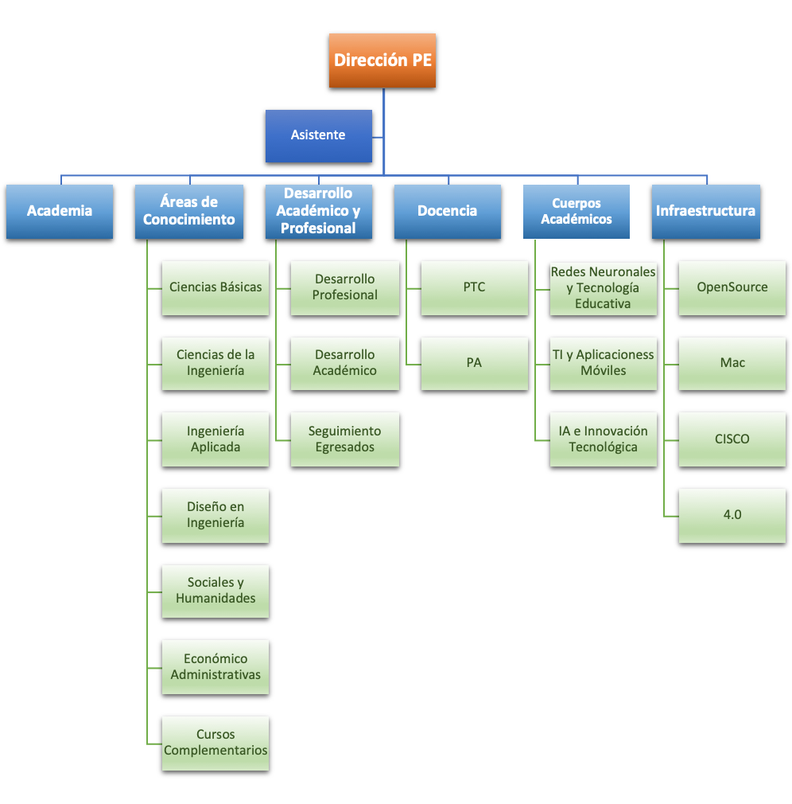
Organigrama no disponible
Sube la imagen como files/organigrama.png
Organigrama Estructura
Áreas y Coordinaciones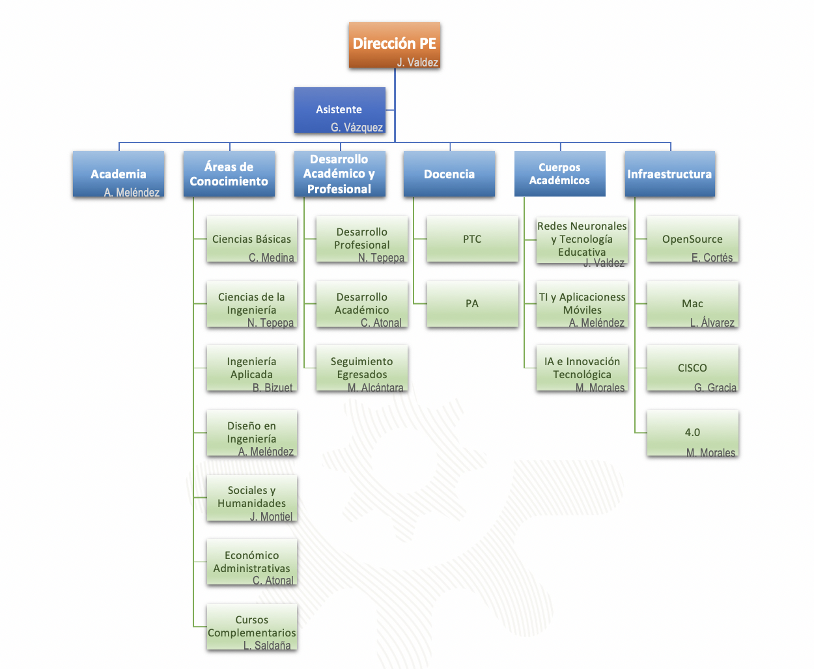
Organigrama no disponible
Sube la imagen como files/organigrama2.png
Dirección del Programa Educativo
Nombrado por el RectorEl Director del Programa Educativo es el área y titular dependiente de la Secretaría Académica, encargado de promover y vigilar el desarrollo del Programa Educativo, de acuerdo al Artículo 33 del Reglamento Interior de la Universidad.
Funciones Estratégicas
- Promover y vigilar el desarrollo del Programa Educativo
- Mantener actualizado el Programa Educativo
- Diseñar, implementar y evaluar planes de estudio
Gestión Académica
- Coordinar sistemas de evaluación
- Asignar cargas académicas
- Establecer mecanismos de seguimiento
Vinculación y Normatividad
- Promover capacitación docente
- Participar en órganos colegiados
- Proponer normatividad del Programa Educativo
Asistente del Programa Educativo
Asignado por Secretaría AdministrativaBrinda apoyo administrativo, técnico y operativo a la Dirección del Programa Educativo, garantizando la organización y seguimiento de los procesos académicos, administrativos, de calidad, vinculación, acreditación y mejora continua.
Administrativa
- • Agenda y oficios
- • Minutas y actas
- • Correspondencia
Académica
- • Horarios y aulas
- • Cargas académicas
- • Tutorías y estadías
Calidad
- • ISO 9001:2015
- • Auditorías
- • Indicadores
Acreditación
- • CIEES
- • Evidencias GAPES
- • Autoevaluaciones
Academia del Programa Educativo
Órgano colegiado máximoÓrgano colegiado libre, plural y democrático, con carácter deliberativo y propositivo, encargado de planear, analizar, estructurar, evaluar y corregir el proceso educativo. Regulado por el Reglamento de Operación e Instalación del Sistema de Academias (2012).
Integrantes
- Profesores e investigadores de tiempo completo
- Rector y Secretario Académico (voz y voto)
- Profesores por asignatura (voz y voto)
- Director del Programa Educativo (voz y voto)
- Profesores invitados (voz, sin voto)
- Alumnos con promedio > 8.5 (voz, sin voto)
Funciones Colegiadas
- Planeación, ejecución y evaluación de planes de estudio
- Optimizar el proceso de enseñanza-aprendizaje
- Diseñar apoyos didácticos y fomentar el intercambio
- Programas contra deserción, reprobación y eficiencia terminal
- Capacitación, actualización y superación profesional
- Promover investigación pedagógica, científica y tecnológica
SubAcademias — 7 Áreas del Conocimiento
Coordinadores nombrados por el Director del Programa Educativo y visto bueno del Colegiado. Basadas en el Acuerdo de Washington y la Alianza Internacional de Ingenierías.
1. Ciencias Básicas
Matemáticas, física, química y biología. Herramientas matemáticas, lógico-espaciales y razonamiento científico.
2. Ciencias de la Ingeniería
Herramientas, técnicas y metodologías para solución de problemas de ingeniería básica. Conexión entre ciencias básicas y aplicación.
3. Ingeniería Aplicada
Aplicación de matemáticas y ciencias de la ingeniería a problemas prácticos de la disciplina.
4. Diseño en Ingeniería
Integración de matemáticas, ciencias naturales y estudios complementarios para desarrollo de elementos, sistemas y procesos.
5. Ciencias Sociales y Humanidades
Habilidades humanísticas, éticas, sociales y análisis de la problemática social en el mundo globalizado.
6. Ciencias Económico Administrativas
Comprensión del impacto económico, planificación, gestión, dirección y control de proyectos.
7. Cursos Complementarios
Idiomas, comunicación, desarrollo sustentable, impacto de la tecnología, ética profesional, medio ambiente.
Coordinaciones Especializadas
Coordinadores nombrados por el Director del Programa Educativo y visto bueno del Colegiado
Desarrollo Académico
Coordina, planea, supervisa y fortalece los procesos académicos, asegurando la calidad de la enseñanza y la actualización curricular.
Acompañamiento Estudiantil
Coordina estrategias de apoyo integral, tutorías, asesorías y seguimiento académico para la permanencia y éxito de los estudiantes.
Seguimiento a Egresados
Coordina el seguimiento laboral y profesional de egresados, evaluando la pertinencia del Programa Educativo y la empleabilidad.
Docencia
Profesor Investigador de Tiempo Completo
- Enseñanza, investigación y tutorías
- Participación en cuerpos académicos
- Diseño de material didáctico
- Supervisión de estadías y servicio social
- Generación y transferencia de conocimiento
Profesor de Asignatura
- Enseñanza de acuerdo al Programa Educativo
- Asesorías y tutorías
- Trabajo colegiado en academia
- Participación en educación continua
Contratación por Secretaría Administrativa acorde al Reglamento de Ingreso, Permanencia y Promoción del Personal Académico (RIPPPA)
Cuerpos Académicos
Formados por el Director del Programa Educativo y el Colegiado, en vínculo con la Dirección de Investigación y Posgrado
Redes Neuronales y Tecnología Educativa
Diseño, desarrollo y aplicación de modelos inteligentes para la mejora de los procesos educativos.
Tecnologías de Información y Aplicaciones Móviles
Diseño, desarrollo e integración de tecnologías de información, sistemas distribuidos y aplicaciones móviles.
Inteligencia Artificial e Innovación Digital
Investigación, desarrollo e implementación de soluciones basadas en IA, ciencia de datos y automatización inteligente.
Infraestructura y Laboratorios
Coordinadores nombrados por el Director del Programa Educativo, en gestión con la Secretaría Administrativa
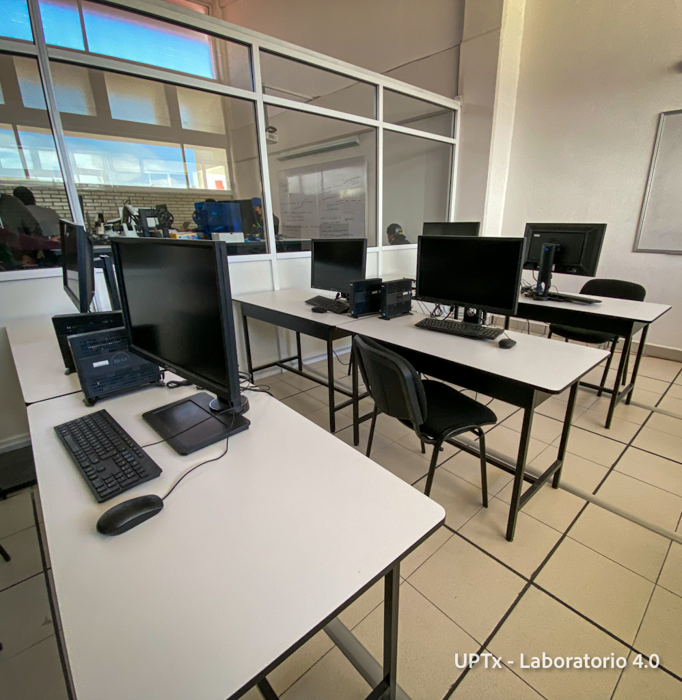
Agrega una fotofiles/lab-opensource.jpgLaboratorio OpenSource
Software libre, administración de servidores, computación en la nube, automatización.
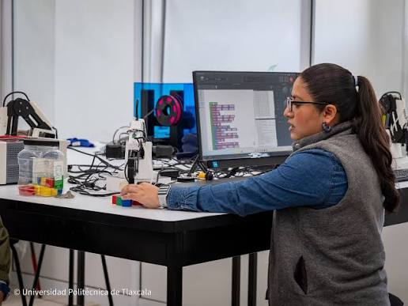
Agrega una fotofiles/lab-mac.jpgLaboratorio MAC
Desarrollo de aplicaciones móviles, diseño UX/UI, producción multimedia, ecosistema Apple.
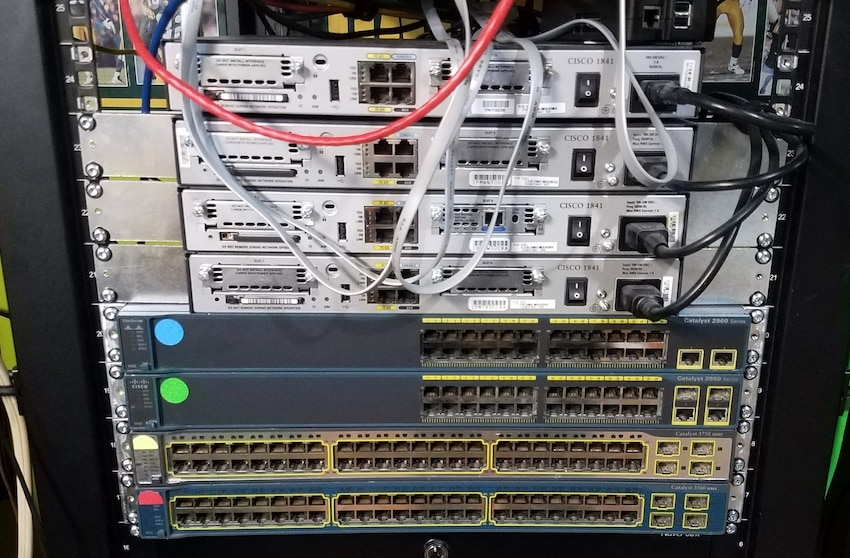
Agrega una fotofiles/lab-cisco.jpgLaboratorio Redes CISCO
Infraestructura de redes, routing, switching, ciberseguridad, certificaciones CCNA/CCNP.
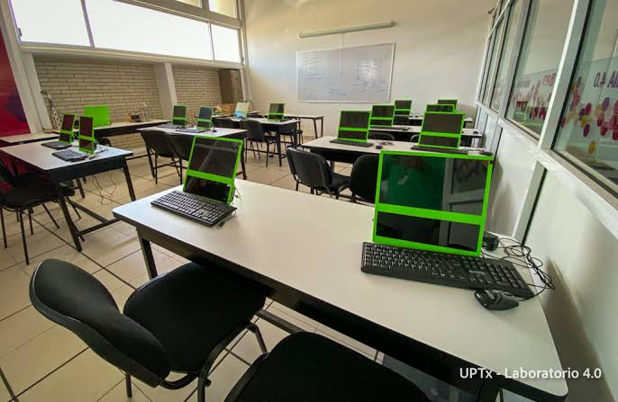
Agrega una fotofiles/lab-40.jpgLaboratorio 4.0
IoT, gemelos digitales, machine learning, edge computing, robótica y manufactura avanzada.
Cuerpo Académico
Conoce a los docentes e investigadores que forman parte del programa educativo.
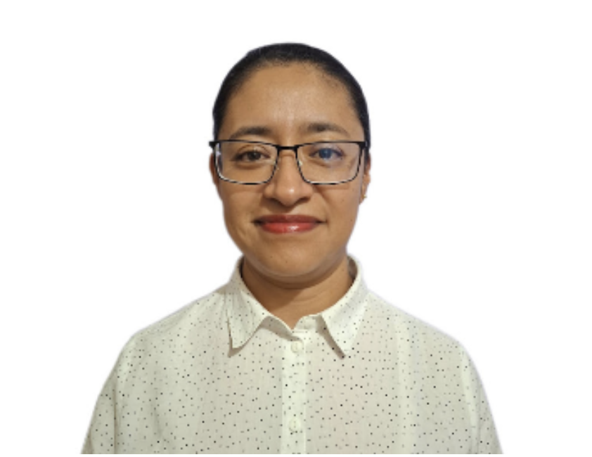
Mtra. Candy Atonal Nolasco.
Profesor Investigador de Tiempo completo
Diseño en IngenieríaLicenciatura en Informática y Maestría en Ingeniería.
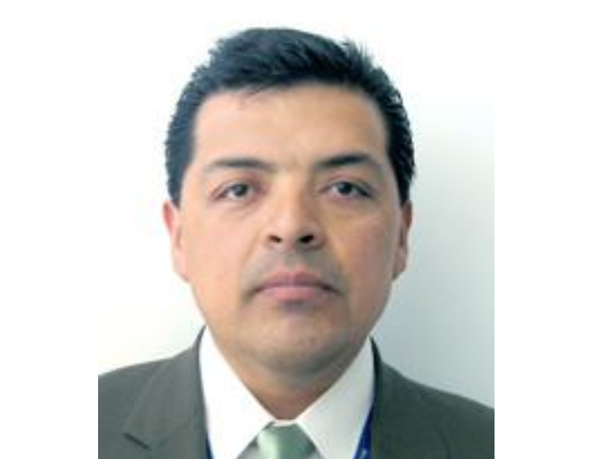
Dr. Cristóbal Hernández Medina.
Profesor Investigador de Tiempo completo
Ciencias BásicasMatemáticas Aplicadas (Computación), Profesional Técnico en Electromecánica, Finanzas y Gestión / Sistemas Computacionales, Desarrollo Regional (Economía).
Mtro. Jose Javier Carmona Lopez.
Profesor por Asignatura
Diseño en IngenieríaLicenciatura en Informática y Maestría en Ingeniería.
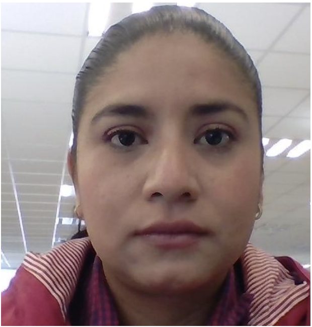
Mtra. Ivette Hernández Dávila.
Profesor por Asignatura
Diseño en IngenieríaIngeniería en Sistemas Computacionales y Maestría en Sistemas Computacionales.
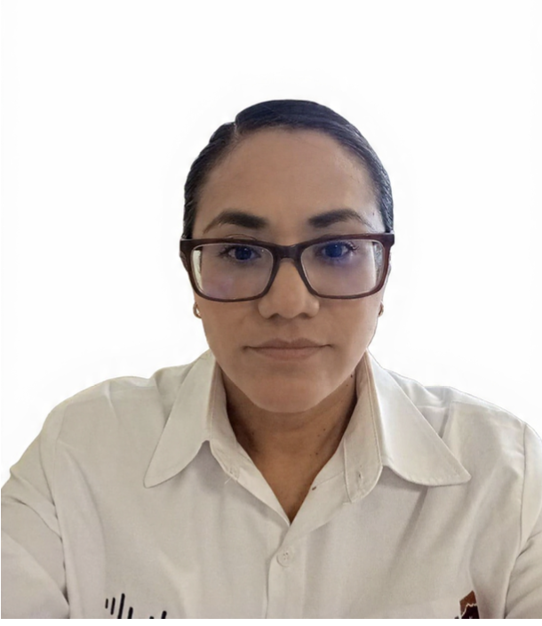
Mtra. María Luisa Alcántara Muñoz.
Profesor Investigador de Tiempo completo
Ingeniería AplicadaSistemas computacionales.
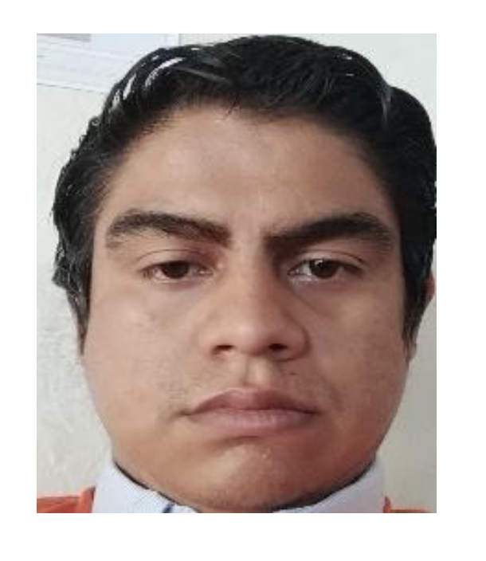
Mtro. José Miguel Zenteno Ríos.
Profesor por Asignatura
Diseño en IngenieríaIngeniería en Tecnologías de la Informació y Maestría en Sistemas Computacionales.
Opiniones de Egresados
"Estudiar TI en la UPTlax me dio las bases lógicas y técnicas necesarias. Los laboratorios y las prácticas en servidores reales te abren las puertas de inmediato en el sector productivo."
— Ing. Israel Ramos M. (Egresado Backend Developer)
"Las estadías profesionales del último cuatrimestre son la mejor práctica. Te vinculas de verdad con empresas del corredor tecnológico y eleva muchísimo la empleabilidad."